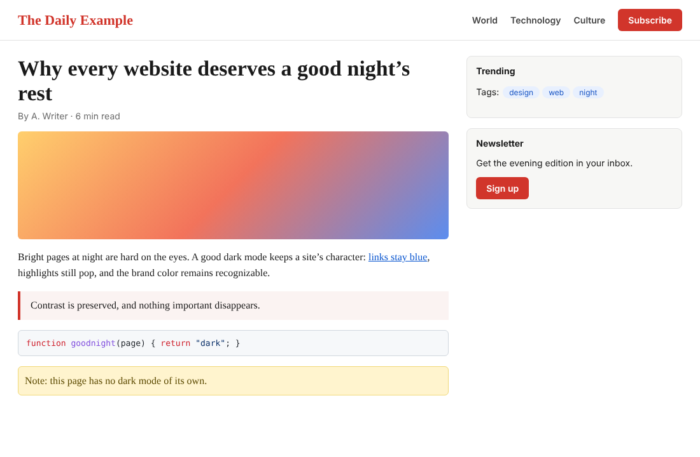
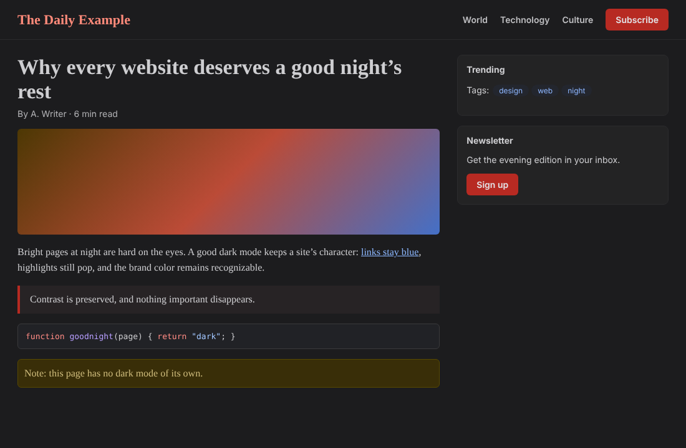
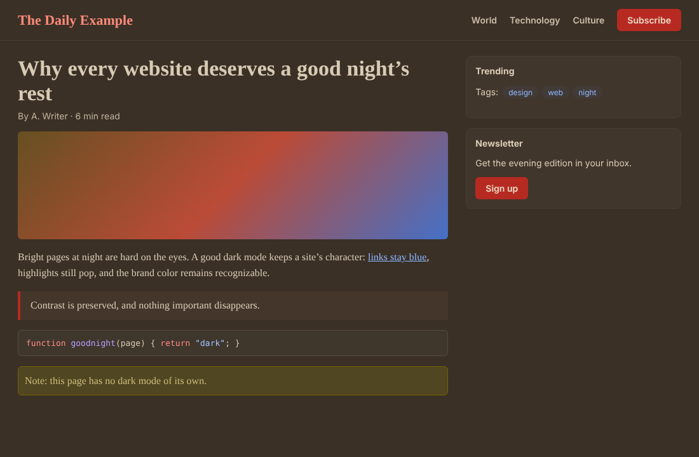
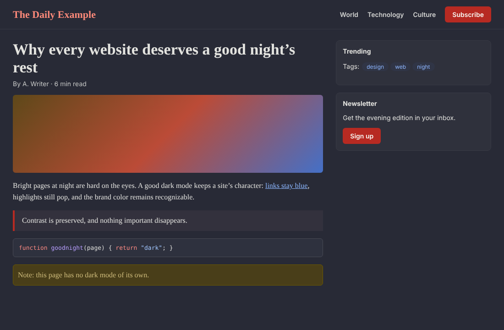
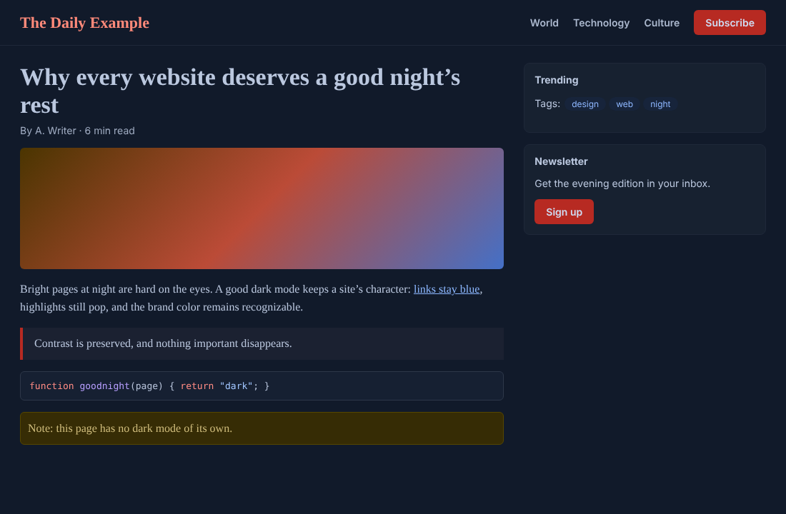

Auto, On or Off
Auto follows your system’s Dark Mode or a schedule (20:00 to 07:00 by default). On always darkens websites; Off never does.
Free and open source
Nyx is a Safari extension for iPhone, iPad and Mac. It builds a dark style for each page from that page’s own colors, so sites stay easy to read and still look like themselves.
Safari on iOS, iPadOS and macOS. Also runs in Chrome, Edge and Firefox.





The page as its designer made it. Dark: links stay blue, the brand red stays red, cards stay distinct. Sepia: warm and soft for long reads at night. Dracula: one of seven editor-inspired themes. Blue: one of the color themes.
How it works
Inverting a page turns photos into negatives and brand colors into strangers. Nyx reads the page’s stylesheets and writes a dark style for that page.
Links stay blue, highlights still stand out, and brand colors stay recognizable.
Cards, menus and code blocks stay distinguishable from the page behind them.
Every text color is checked against its background to meet WCAG contrast.
Features
Auto follows your system’s Dark Mode or a schedule (20:00 to 07:00 by default). On always darkens websites; Off never does.
From the toolbar menu, give any site its own status and theme, pause it until tomorrow, or fine-tune dynamic colors, background images and image inversion.
Apply a setting to a whole domain, a subdomain, a host with a port such as 192.168.1.2:8080, or a single page.
Sites that already have a dark mode are left alone, and Nyx checks again when a site switches its own theme. You can override this per site.
Dark, Black, Gray and Sepia, six color themes, moody themes, and editor themes like Dracula, Nord, One Dark, Solarized, Gruvbox, Catppuccin and Tokyo Night.
Pick a background color, text color, image brightness and grayscale. Share any theme as a link that others can import into Nyx.
Photos are dimmed and desaturated to match your theme. Dark logos and icons on transparent backgrounds are inverted so you can still see them.
Toggle the current site, step it through Auto, On, Off and Default, pause it until tomorrow, cycle themes, or set the global status.
Settings sync through iCloud. Use Nyx from Shortcuts, a Focus Filter, or a Control Center control.
Install
The App Store release is on its way. Until then you can build Nyx yourself, for free.
Build the Nyx app with Xcode, then turn on the extension in Safari.
apple/README.md.Build the extension with Node.js and load it unpacked.
npm install
npm run buildchrome://extensions, turn on Developer mode, choose “Load unpacked” and pick dist/chrome.about:debugging, choose “Load Temporary Add-on” and pick dist/firefox/manifest.json.Privacy
What you browse stays between you and Safari. Nyx has no accounts, no servers and nothing to send them.